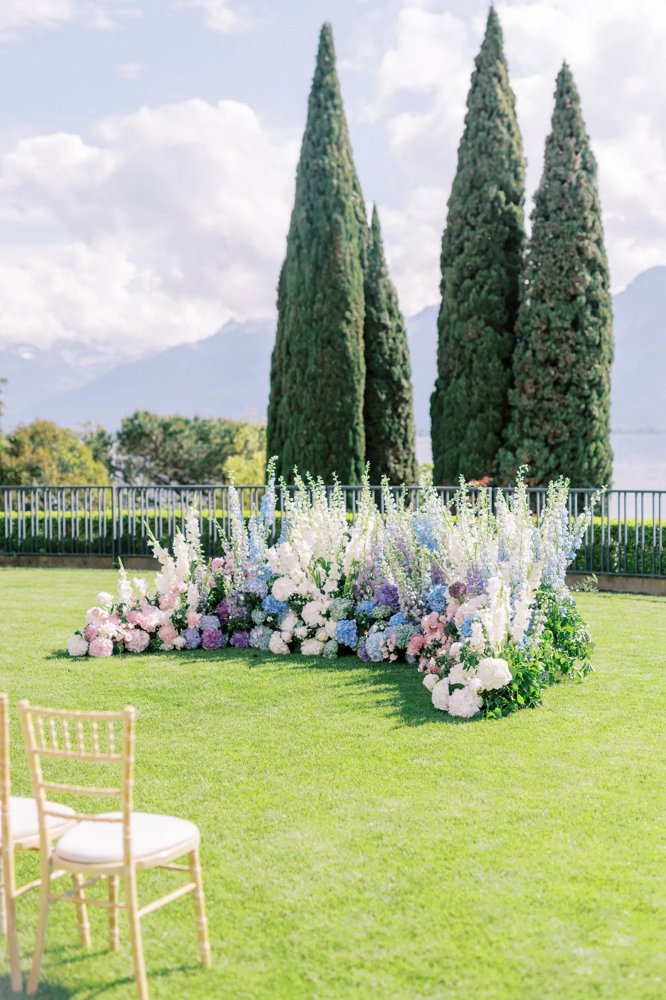
i.Mariages
Cérémonie, réception, bouquet : une décoration florale qui raconte votre histoire et met en valeur le lieu.
Des créations à la fois romantiques et naturelles, qui allient couleurs, matières, senteurs et émotions.
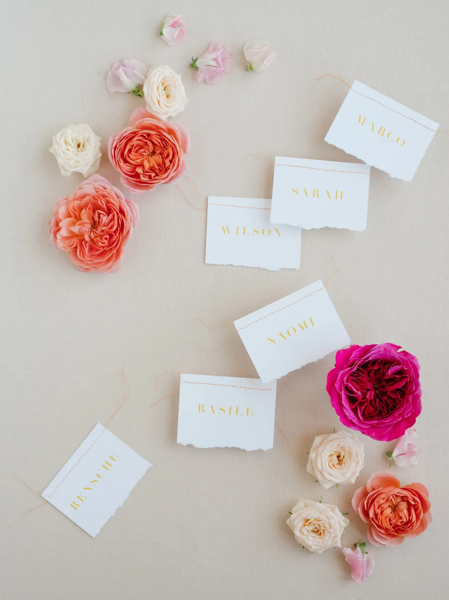
Roses de jardin parfumées jasmin pois de senteur lilas muguet dahlias clématites renoncules anémones
Nous nous inspirons de la nature pour créer des compositions élégantes, raffinées et sur mesure. Nous utilisons des fleurs de qualité, parfois certaines variétés oubliées, en privilégiant lorsque cela est possible les petits producteurs locaux.
Petite déjà, Claire passait des heures dans le jardin de sa grand-mère à composer des bouquets.
Formée à l'école des fleuristes de Paris puis auprès de fleuristes de renommée internationale, Claire a créé l'atelier à son image : des créations poétiques et féminines, dans un style très naturel.
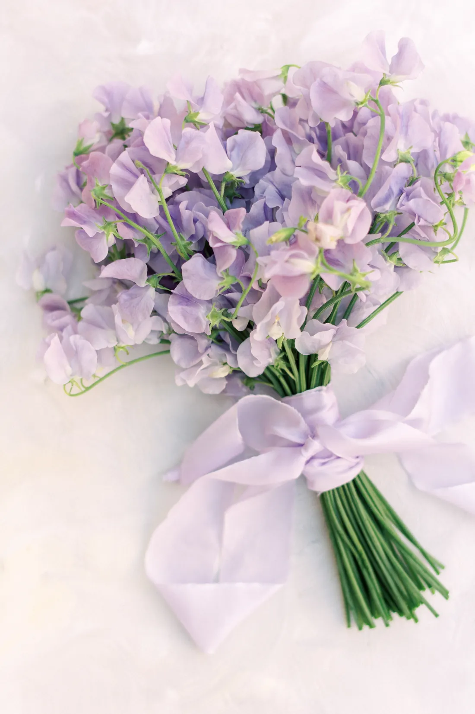
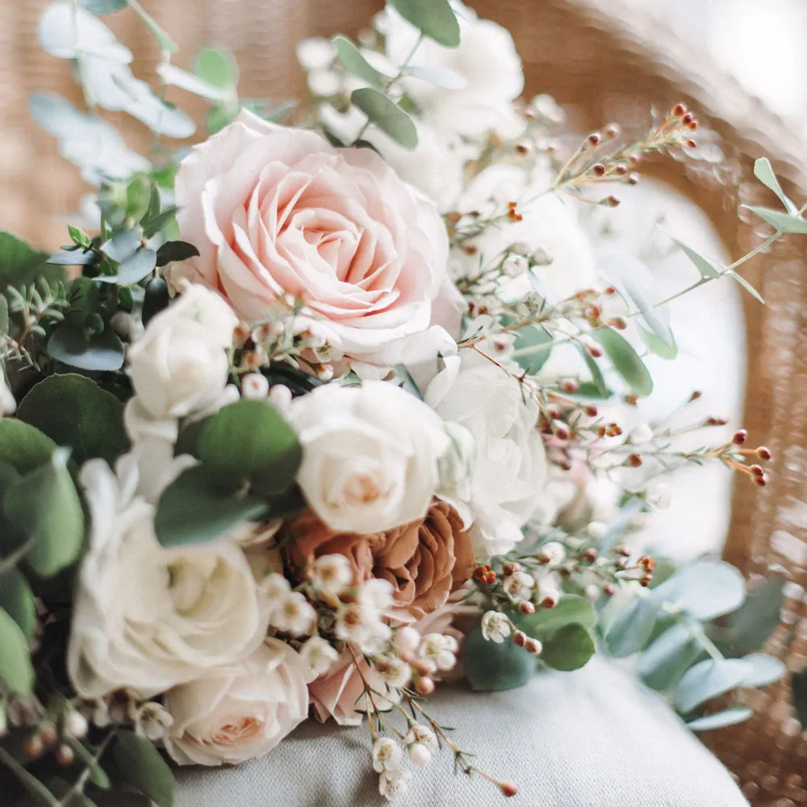
Intimistes ou de plus grande ampleur, nous imaginons chaque ambiance florale sur mesure, avec le même souci constant du détail.

i.Cérémonie, réception, bouquet : une décoration florale qui raconte votre histoire et met en valeur le lieu.
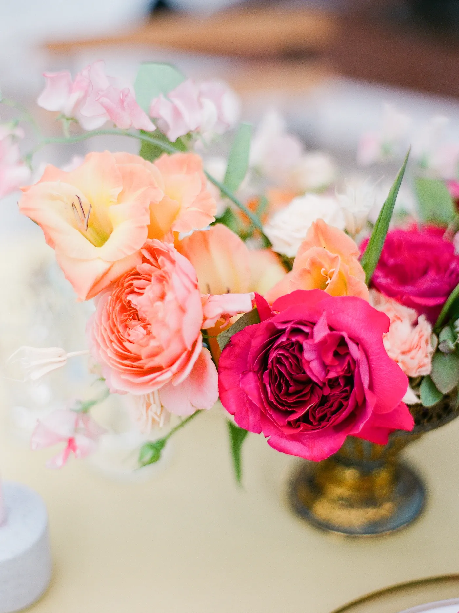
ii.Lancement de produit, dîner de gala, inauguration : chaque projet débute autour d'un moodboard détaillé.
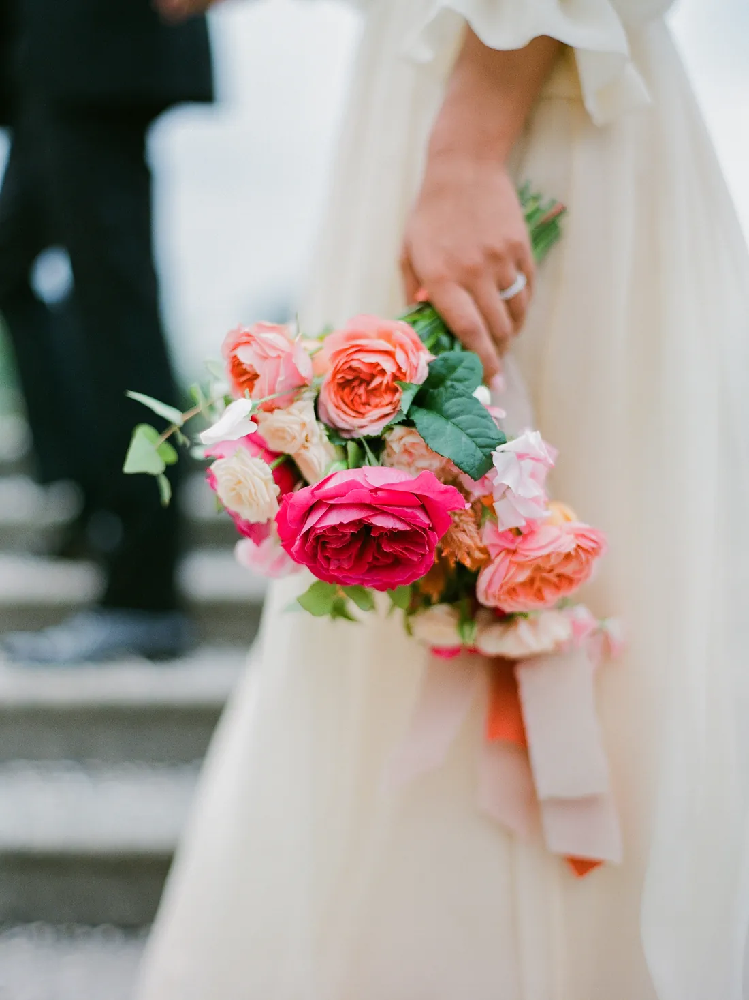
iii.Confectionnés dans notre atelier à Genève, avec une attention particulière aux détails, et livrés à Genève.
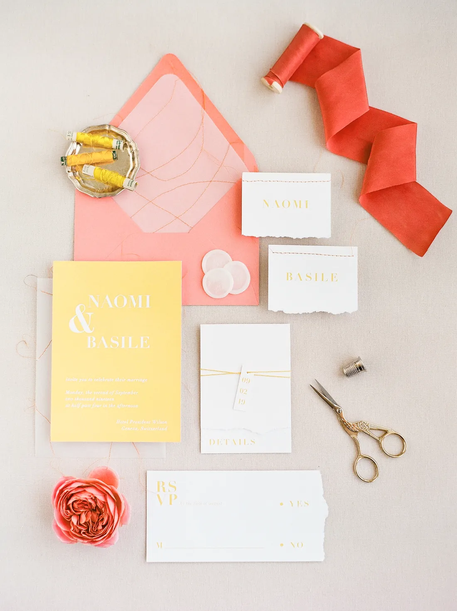
iv.Deux heures pour composer votre propre création, avec des fleurs fraîches de saison.
Découvrir les ateliers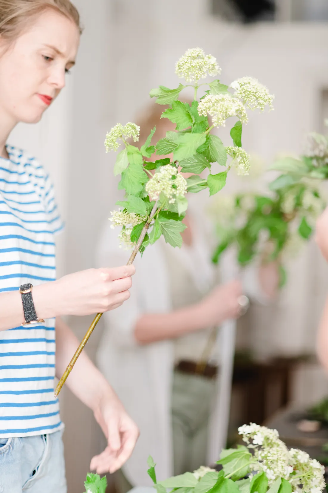
Une invitation à retrouver les plaisirs simples que procurent les fleurs, à laisser libre cours à sa sensibilité et à s'éloigner du tumulte quotidien.
Ateliers sur mesure aussi : séminaires d'entreprise, anniversaires, couronnes de fleurs, centres de table…
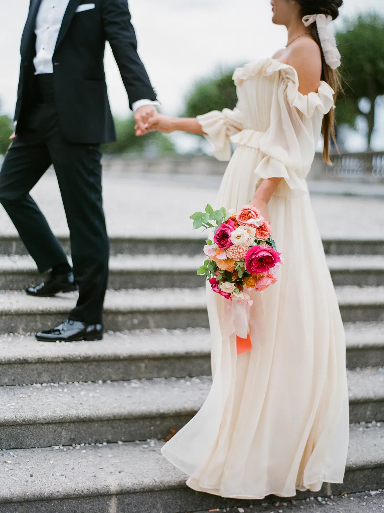
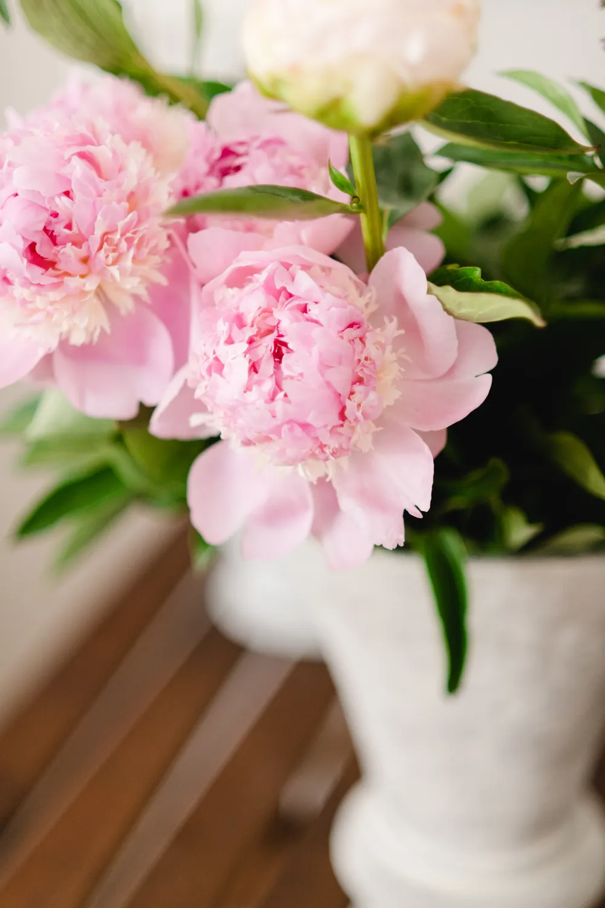
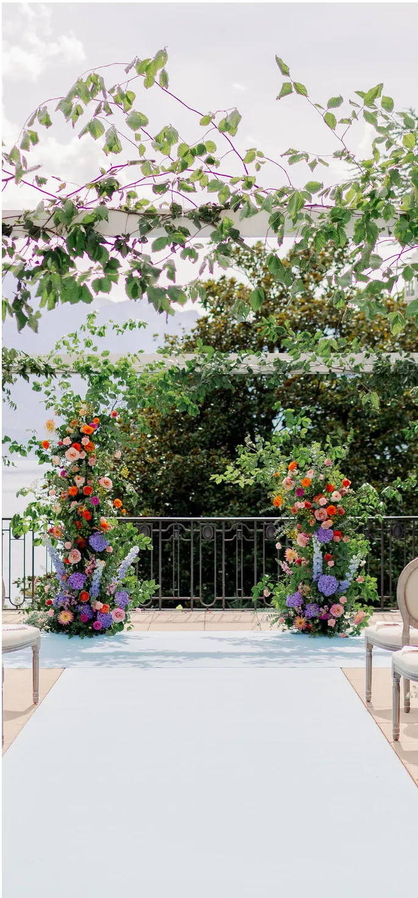
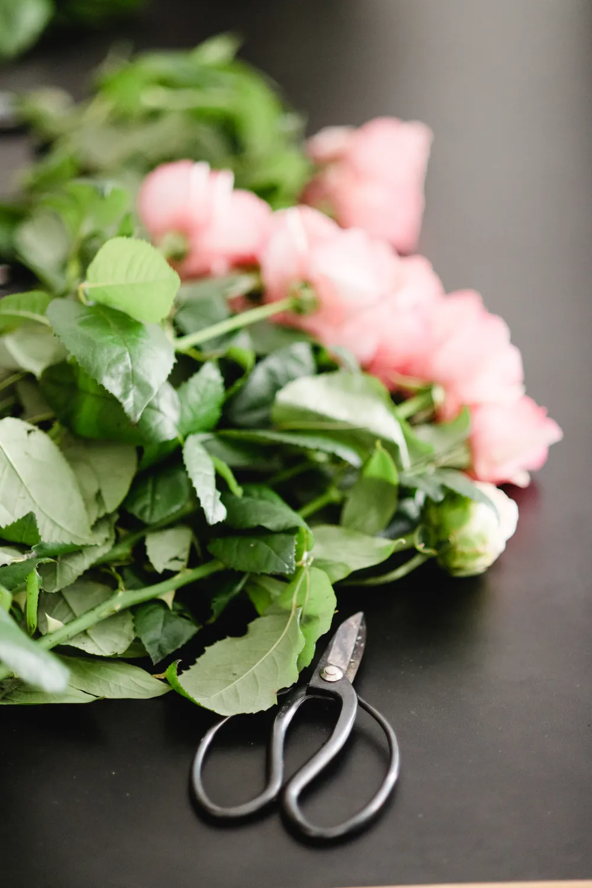
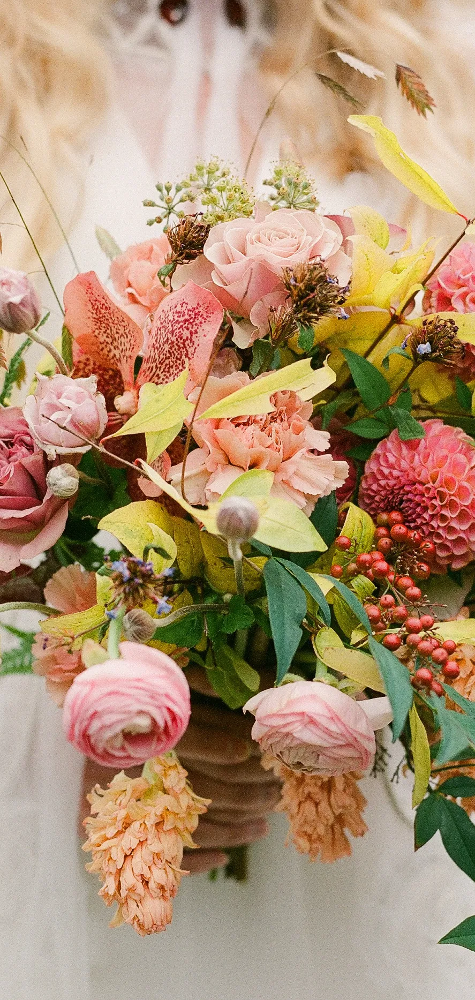
Mariages à Genève, en Suisse, en Haute-Savoie et partout ailleurs : écrivez-nous ou appelez-nous, nous nous réjouissons de vous lire.
Genève · sur rendez-vous uniquement